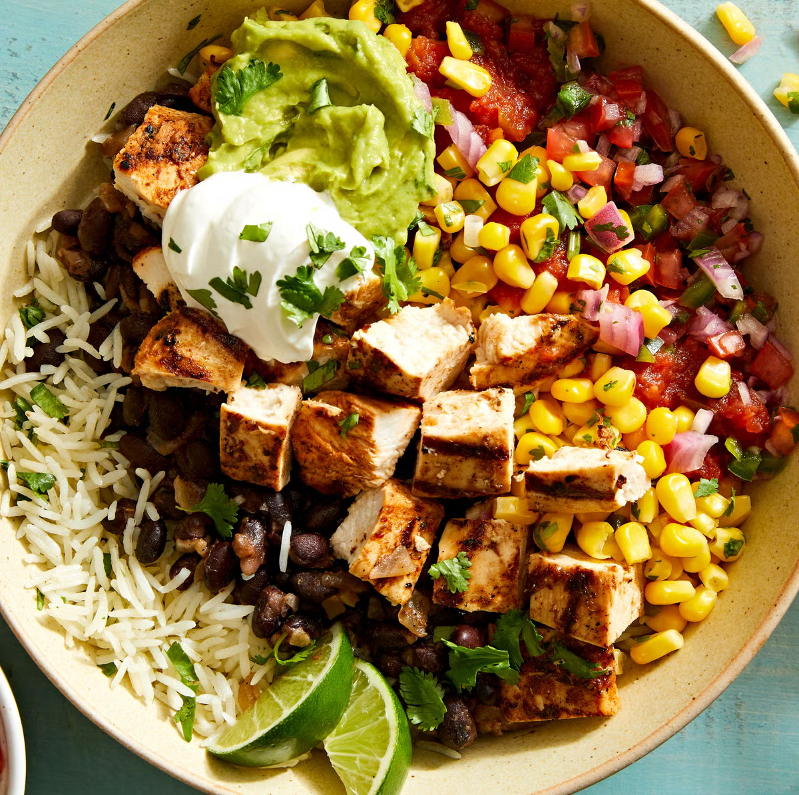

Burrito Bowls
Return to Home

Burrito Bowl Bliss
Savour the perfect balance of flavours and textures with this irresistible burrito bowl! A base of delicious rice with seasoned protein, fresh toppings like guacamole and some zesty lime to make every bite a fiesta!
Ingredients:
- 2 boneless chicken breasts
- 2 tbsp olive oil
- 1 tsp ground paprika
- 1 tsp ground cumin
- 1/2 tsp chilli pepper
- 1/2 tsp salt
- 1/2 tsp black pepper
- 1 cup white rice
- 2 cups chopped lettuce
- 1 cup canned corn
- 1 cup canned black beans
- 1 avocado
- 1/4 cup sour cream
- 1/4 cup grated cheddar cheese
- 1 tbsp chopped parsley
- 1/2 chopped tomato
- 1/2 chopped onion
- 2 tbsp white vinegar
- 4 tbsp lime juice
Steps:
- Cut 2 chicken breasts into small pieces, then add them to a bowl. Next, add 2 tsp of olive oil, 1 tsp of paprika, 1 tsp of cumin, 1/2 tsp of chilli pepper, 1/2 tsp of salt and 1/2 tsp of black pepper. Mix well until the chicken is well-coated with the spices and oil.
- Heat a pan over medium heat and add the chicken. Cook for about 7-8 minutes per side until cooked all the way through, then set it aside.
- Cook dry white rice according to package instructions.
- Add 1 tbsp of chopped parsley, 1/2 of a chopped tomato, 1/2 of a chopped onion, 2 tbsp of white vinegar and 4 tbsp of lime juice to a bowl. Toss well to combine all ingredients.
- Evenly divide 2 cups of chopped lettuce, 1 cup of corn, 1 cup of black beans, the cooked rice, and the cooked chicken pieces into serving bowls. Then add the salsa, sliced avocado, sour cream, and shredded cheddar cheese on top of the burrito bowls.